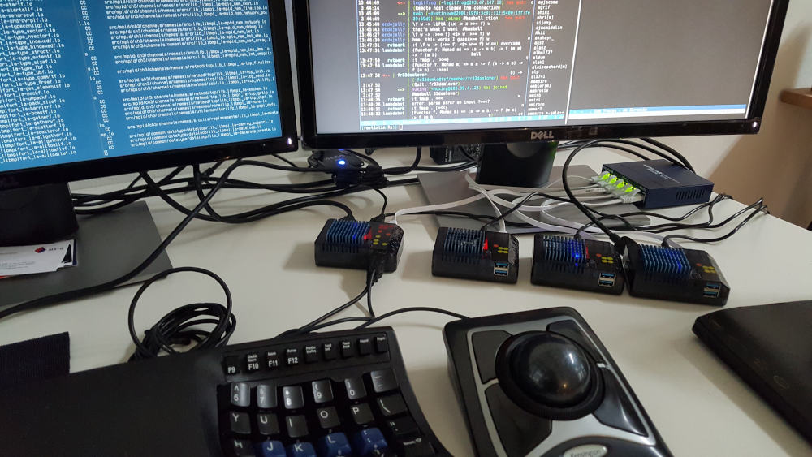

After playing/working with my Odroid XU4 for a month and realizing that it was capable of being a serious workstation, I started thinking about getting a few more and making a Beowulf cluster workstation at the office.

The setup was fairly simple:
To start, I tackled the issue of propogating changes across the machines with Fabric, a nice Python library that allows execute of commands via SSH. For example, a simple healthcheck script:
from fabric import Connection
from paramiko.ssh_exception import NoValidConnectionsError
NODES = (
"10.10.10.2",
"10.10.10.3",
"10.10.10.4",
)
for node in NODES:
try:
result = Connection(node).run("cat /etc/hostname", hide=True)
msg = "Ran {0.command!r} on {0.connection.host}, got:{0.stdout}"
print(msg.format(result))
except NoValidConnectionsError:
print("{} is down".format(node))
I also tested out MPICH, which worked flawlessly:
$ mpiexec -f ~/nodes -n 6 ./cpi
Process 5 of 6 is on san
Process 0 of 6 is on ichi
Process 3 of 6 is on ni
Process 1 of 6 is on ichi
Process 4 of 6 is on ni
Process 2 of 6 is on ni
pi is approximately 3.1415926544231243, Error is 0.0000000008333312
wall clock time = 0.006851
There's still a lot more that I want to test on this rig once I get time, such as mpi4py, running a Kubenetes cluster... I'll post back when I do.